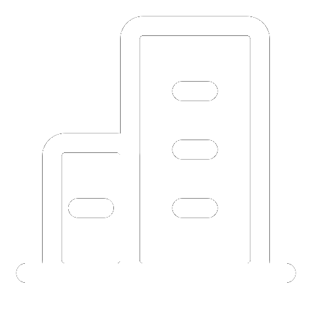

Conheça nossas soluções
Encontre a proteção ideal para suas necessidades
Na Cláusula Corretora de Seguros, entendemos que cada pessoa, família e empresa possui necessidades diferentes quando o assunto é proteção. Por isso, trabalhamos com diferentes modalidades de seguros, buscando soluções que ajudem a preservar seu patrimônio, proteger sua família e proporcionar mais tranquilidade diante de situações inesperadas. Nosso objetivo é oferecer orientação especializada para que você encontre uma proteção adequada às suas necessidades, considerando suas prioridades, seu perfil e as características do bem ou patrimônio que deseja proteger.
Seguro de Vida
Proteção para sua família
Seguro de Automóvel
proteção para seu veículo
Seguro Residencial
Proteção para sua casa

Seguro Empresarial
Proteção para o sua empresa

Seguro de Transporte / Cargas
Proteção para suas mercadorias
Seguro de Vida
O Seguro de Vida oferece proteção financeira para você e sua família diante de situações inesperadas. Em caso de falecimento do segurado, os beneficiários indicados podem receber uma indenização para auxiliar nas despesas familiares, financiamentos e outros compromissos financeiros.
Além dessa proteção, o seguro pode oferecer coberturas adicionais para invalidez, doenças graves e outras situações, conforme o plano contratado. É uma forma de cuidar do futuro e proporcionar mais segurança para quem você ama.
Para quem é indicado:
Pessoas com dependentes financeiros, profissionais autônomos, empresários e todos que desejam proteger seus familiares.
Principais benefícios:
- Proteção financeira para os beneficiários.
- Auxílio nas despesas familiares.
- Possibilidade de cobertura para invalidez e doenças graves.
- Mais segurança e planejamento para o futuro.
Seguro de Automóvel
O Seguro de Automóvel protege seu veículo contra diferentes imprevistos que podem gerar prejuízos financeiros. Dependendo da cobertura contratada, pode oferecer proteção contra colisões, incêndios, roubos, furtos e determinados eventos naturais.
Também pode incluir cobertura para danos causados a terceiros, assistência 24 horas, serviços de reboque, chaveiro e carro reserva. Uma solução para preservar seu patrimônio e dirigir com mais tranquilidade.
Para quem é indicado:
proprietários de carros, motos e outros veículos que desejam reduzir os riscos financeiros relacionados ao uso do automóvel.
Principais benefícios:
- Proteção contra roubos e furtos.
- Cobertura para colisões e danos ao veículo.
- Possibilidade de proteção contra danos a terceiros.
- Assistência 24 horas e serviços emergenciais.
- Mais tranquilidade no trânsito.
Seguro Residencial
O Seguro Residencial protege sua casa, apartamento e seus bens contra diferentes acontecimentos inesperados. Entre as coberturas disponíveis podem estar incêndios, explosões, danos elétricos, roubos, furtos e determinados eventos naturais.
Além da proteção ao imóvel, algumas modalidades oferecem serviços de assistência, como chaveiro, encanador e eletricista. Dessa forma, você conta com mais praticidade para resolver imprevistos e preservar seu patrimônio.
Para quem é indicado:
proprietários de imóveis, pessoas que residem em imóveis alugados e famílias que desejam proteger sua casa e seus bens.
Principais benefícios:
- Proteção contra incêndios e danos elétricos.
- Possibilidade de cobertura para roubos e furtos.
- Assistência residencial e serviços emergenciais.
- Proteção adicional para o patrimônio familiar.
Seguro Empresarial
O Seguro Empresarial oferece proteção para empresas, comércios, escritórios e indústrias contra acontecimentos que podem comprometer suas instalações, equipamentos, estoques e atividades.
As coberturas podem incluir incêndios, roubos, danos elétricos, responsabilidade civil e lucros cessantes, conforme a modalidade contratada. É uma solução para proteger o patrimônio empresarial, reduzir prejuízos e contribuir para a continuidade das operações.
Para quem é indicado:
microempreendedores, pequenas, médias e grandes empresas, estabelecimentos comerciais, escritórios e indústrias.
Principais benefícios:
- Proteção das instalações e do patrimônio empresarial.
- Possibilidade de cobertura para equipamentos e estoques.
- Proteção contra incêndios e roubos.
- Possibilidade de cobertura para lucros cessantes e responsabilidade civil.
- Mais segurança para a continuidade do negócio.
Seguro de Transporte / Cargas
O Seguro de Transportes e Cargas protege mercadorias durante seu deslocamento, ajudando a reduzir os prejuízos financeiros causados por imprevistos durante o transporte.
Dependendo da modalidade contratada, pode oferecer cobertura contra acidentes, colisões, tombamentos, incêndios, roubos e danos às mercadorias. A proteção pode abranger transportes rodoviários, aéreos, marítimos e ferroviários, conforme as condições da apólice.
Para quem é indicado:
transportadoras, empresas de logística, indústrias, distribuidores, comerciantes, importadores e exportadores.
Principais benefícios:
- Proteção das mercadorias durante o transporte.
- Possibilidade de cobertura para acidentes, roubos e danos.
- Opções para diferentes modalidades de transporte.
- Redução dos impactos financeiros de perdas e prejuízos.
- Mais segurança para as operações logísticas.